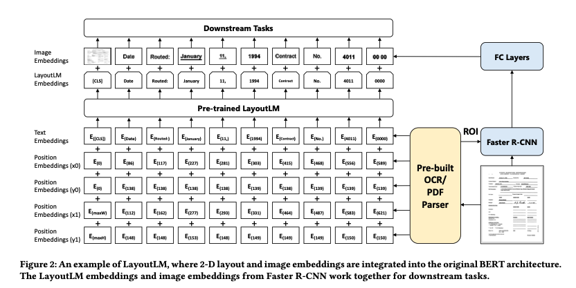
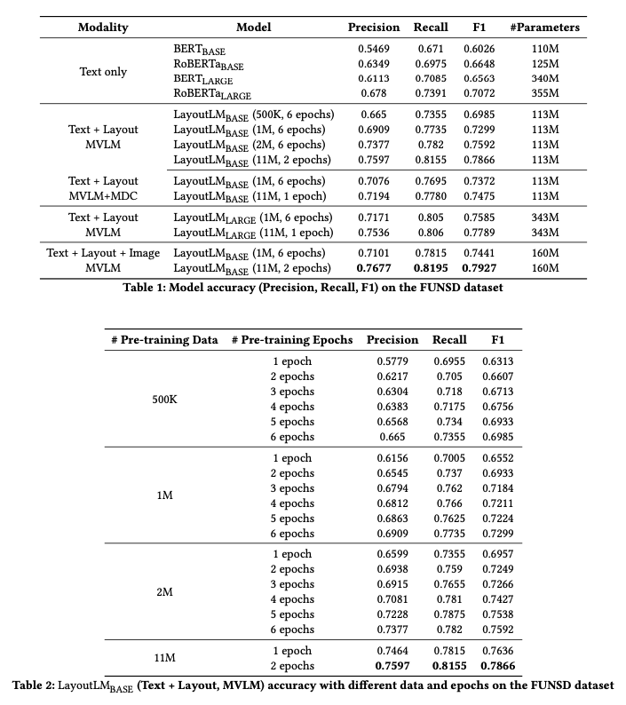

논문 번역(GPT-4)
ABSTRACT
LayoutLM: 텍스트와 레이아웃의 사전 학습을 통한 문서 이미지 이해
최근 문서 이미지에서 텍스트와 레이아웃 정보를 모두 활용하는 것이 중요하다고 인식되고 있습니다. LayoutLM은 이러한 정보를 통합하여 문서 이미지를 이해하기 위해 텍스트와 레이아웃을 사전 학습하는 새로운 방법을 제안합니다. 이 방법은 텍스트와 함께 문서의 레이아웃 정보를 입력으로 활용하여 더 나은 문서 분류, 내용 추출 및 질의 응답 성능을 달성합니다. 이 연구에서 LayoutLM은 여러 벤치마크에서 기존 모델들을 뛰어넘는 성능을 보여 주었습니다.
CCS CONCEPTS
- 정보 시스템→정보 추출: 문서로부터 유용한 정보를 추출하는 기술에 관한 연구입니다.
- 컴퓨팅 방법론→기계 학습: 문서 이미지를 이해하기 위해 텍스트와 레이아웃 정보를 활용하는 사전 학습 기법을 다룹니다.
이 섹션은 문서에서 정보를 추출하고 이해하는 데 필요한 컴퓨팅 기술과 방법론에 초점을 맞춥니다.
KEYWORDS
- 문서 이미지 이해: 스캔된 문서나 디지털 문서 형식에서의 정보 추출 및 해석 • 텍스트 및 레이아웃 사전 학습: 문서의 텍스트와 레이아웃 정보를 함께 사용하여 사전 학습을 수행 • 딥 러닝: 문서 분석과 처리를 위해 깊은 신경망을 사용하는 기술 • NLP (자연어 처리): 자연어 데이터의 이해 및 처리를 위한 기술 및 방법론
이 키워드들은 논문에서 다루는 주요 기술과 방법론의 범위를 나타냅니다.
1. INTRODUCTION
이 연구에서는 문서 이미지 이해를 위한 새로운 사전 학습 모델인 LayoutLM을 소개합니다. 최근 문서의 텍스트와 레이아웃 정보를 통합하여 학습하는 것의 중요성이 강조되고 있습니다. LayoutLM은 이러한 정보를 결합하여 문서의 의미를 더 정확하게 파악할 수 있도록 합니다. 본 논문에서는 모델의 구조와 사전 학습 방법, 그리고 여러 벤치마크 데이터셋에서의 성능 평가 결과를 제시하며, 이 모델이 문서 이미지 처리 및 분석 작업에 어떻게 유용하게 적용될 수 있는지를 설명합니다.
2. LAYOUTLM
LayoutLM은 문서 이미지 이해를 위해 설계된 모델로, 텍스트와 레이아웃 정보를 통합하여 사전 학습합니다. 이 모델은 BERT 기반 아키텍처를 확장하여, 문서 내에서 각 단어의 2D 위치 정보를 고려합니다. 이는 문서의 시각적 구조를 이해하는 데 중요한 역할을 합니다. LayoutLM은 특히 문서 분류, 정보 추출, 질의응답 태스크에서 높은 성능을 보이며, 이를 통해 더 정확하고 효율적인 문서 처리가 가능함을 보여줍니다.

2.1 The BERT Model
BERT(Bidirectional Encoder Representations from Transformers)는 트랜스포머 구조를 기반으로 하며, 대량의 텍스트 데이터로부터 단방향이 아닌 양방향의 문맥을 학습할 수 있습니다. 이를 통해 자연어 처리(NLP)에서 다양한 태스크의 성능을 향상시킬 수 있습니다. BERT 모델은 또한 다양한 다운스트림 NLP 태스크에 대한 사전 훈련과 미세 조정 단계를 포함합니다. 이러한 특징 덕분에 BERT는 텍스트의 복잡한 의미를 더 효과적으로 이해하고 처리할 수 있습니다.
2.2 The LayoutLM Model
LayoutLM은 BERT 모델을 기반으로 하여, 텍스트 데이터와 함께 문서의 레이아웃 정보를 입력으로 사용합니다. 이 모델은 문서의 시각적 요소와 구조적 위치를 고려하여, 단어의 의미뿐만 아니라 해당 단어가 문서 내에서 어떤 역할을 하는지도 파악할 수 있도록 합니다. LayoutLM은 문서 분류, 정보 추출, 질의응답과 같은 태스크에서 더욱 향상된 성능을 보여주는 것이 목표입니다. 이를 통해, 문서의 텍스트와 레이아웃 정보를 모두 활용하는 종합적인 이해가 가능해집니다.
2.3 Model Architecture
이 모델은 텍스트 인코딩을 위한 BERT의 트랜스포머 아키텍처를 사용합니다. 여기에 문서의 레이아웃 정보를 처리할 수 있는 위치 인코딩 계층을 추가하여, 문서 내의 각 단어 위치가 모델에 입력됩니다. 또한, 시각적 특성을 포함시키기 위해 이미지 처리 서브모듈이 통합되어 있습니다. 이러한 아키텍처는 텍스트와 레이아웃 데이터 모두를 포괄적으로 활용하여, 문서 이해 작업에 있어 더욱 깊이 있는 분석을 가능하게 합니다.
2.4 Pre-training LayoutLM
LayoutLM은 먼저 BERT의 구조를 사용하여 대규모 텍스트 데이터에서 언어 모델링을 수행합니다. 여기에 문서의 레이아웃 정보를 추가로 결합하여, 모델이 텍스트와 함께 해당 텍스트가 위치한 문서 내의 공간적 정보도 학습하도록 합니다. 이 과정은 문서의 의미뿐 아니라 구조적 맥락을 이해하는데 중요한 역할을 합니다. 이렇게 사전 학습된 모델은 후속 작업에서 미세 조정을 통해 특정 문서 이해 작업에 적용됩니다.
2.5 Fine-tuning LayoutLM
사전 학습된 LayoutLM 모델은 특정 NLP 작업에 맞춰 추가적으로 학습됩니다. 이 과정에서, 문서의 종류나 태스크에 특화된 데이터를 사용하여 모델이 더욱 정밀하게 튜닝됩니다. 이를 통해 모델은 다양한 문서 분석 작업에서 보다 높은 성능을 발휘할 수 있으며, 특정 문서의 내용을 더욱 정확하게 이해하고 처리할 수 있습니다.
3 EXPERIMENTS
이 실험들은 주로 문서 분류, 정보 추출, 질의응답 등의 NLP 태스크를 대상으로 하며, 여러 벤치마크 데이터셋을 사용하여 LayoutLM의 성능을 다른 최신 모델들과 비교합니다. 결과적으로 LayoutLM은 텍스트와 레이아웃 정보를 통합하는 접근 방식이 문서 이미지 이해 작업에서 효과적임을 보여줍니다.
3.1 Pre-training Dataset
이 데이터셋은 다양한 유형의 문서 이미지를 포함하며, 각 이미지에는 텍스트와 레이아웃 정보가 풍부하게 담겨 있습니다. 이를 통해 모델은 문서의 구조와 공간적 배치를 이해하는 방법을 학습하게 됩니다. 데이터셋은 대규모로 구성되어 있어, 모델이 다양한 문서 형태와 스타일을 경험하며 더 강력한 일반화 능력을 개발할 수 있도록 돕습니다.
3.2 Fine-tuning Dataset
논문의 3.2절에서는 LayoutLM 모델의 미세 조정에 사용된 데이터셋에 대해 설명합니다. 이 데이터셋은 특정 NLP 태스크에 맞추어 세밀하게 구성되어 있으며, 문서 분류, 정보 추출, 질의응답 등 다양한 문서 처리 작업에 필요한 레이블이 포함되어 있습니다. 미세 조정 과정에서는 이 데이터셋을 활용하여 모델이 사전 학습된 지식을 특정 작업에 적용하고, 실제 성능을 개선하는 방법을 학습합니다. 이를 통해 모델은 실제 응용 프로그램에서의 유용성을 검증받게 됩니다.
3.3 Document Pre-processing
이 과정은 문서에서 텍스트와 레이아웃 정보를 추출하고, 이를 모델이 처리할 수 있는 형태로 변환하는 작업을 포함합니다. 텍스트는 OCR(Optical Character Recognition) 기술을 사용하여 디지털 텍스트로 변환되며, 레이아웃 정보는 문서의 각 요소 위치를 나타내는 좌표로 변환됩니다. 이러한 전처리 단계는 모델이 문서의 시각적 및 구조적 정보를 보다 효과적으로 학습하도록 돕습니다.
3.4 Model Pre-training
이 과정에서는 대규모 문서 데이터셋을 사용하여 텍스트와 레이아웃 정보의 통합 학습이 이루어집니다. 모델은 문서 내에서 텍스트의 위치와 관련된 컨텍스트를 학습하여, 단순한 텍스트 해석을 넘어서 문서의 구조적 이해도를 높입니다. 이를 통해 모델은 복잡한 문서 이미지에서 정보를 효과적으로 추출하고 이해할 수 있는 기반을 마련합니다.
3.5 Task-specific Fine-tuning
여기서는 문서 분류, 정보 추출, 질의응답과 같은 다양한 NLP 태스크를 위한 미세 조정 방법을 구체적으로 다룹니다. 각 태스크에 대한 성능 향상을 위해, 사전 학습된 모델을 해당 태스크의 데이터셋으로 추가 학습시키면서, 텍스트와 레이아웃 정보를 최적화된 방식으로 결합하는 방법이 중점적으로 연구됩니다. 이 과정을 통해 모델은 특정 문서 처리 작업에 보다 효과적으로 적용될 수 있습니다.
3.6 Results
실험 결과는 모델이 문서 분류, 정보 추출, 질의응답 등의 다양한 NLP 태스크에서 기존 모델들보다 우수한 성능을 보였음을 보여줍니다. 또한, 텍스트와 레이아웃 정보의 통합적 활용이 모델의 문서 이해 능력을 크게 향상시킨다는 것을 입증합니다. 이러한 결과는 LayoutLM이 실제 응용 프로그램에서도 효과적으로 활용될 수 있음을 시사합니다.


4. RELATED WORK
이 섹션에서는 문서 이미지 분석, 자연어 처리(NLP), 컴퓨터 비전 분야에서의 연구를 중점적으로 다루며, 특히 텍스트와 시각적 정보의 통합을 시도한 다양한 연구들을 검토합니다. 이를 통해 LayoutLM의 혁신적인 접근 방식이 기존의 어떤 문제점들을 해결할 수 있는지, 그리고 어떻게 이전의 연구들을 발전시켰는지를 설명합니다. 이러한 비교 분석은 LayoutLM의 기술적 배경과 연구의 필요성을 강조합니다.
4.1 Rule-based Approaches
이러한 방식들은 특정 규칙이나 패턴을 사용하여 문서의 구조를 분석하고, 텍스트와 레이아웃 정보를 분리하는 데 집중합니다. 이 접근법은 구조화되지 않은 데이터를 처리하는 데는 한계가 있지만, 명확한 규칙이 적용될 수 있는 상황에서는 효과적일 수 있습니다. 이 섹션에서는 규칙 기반 방식의 기존 한계와, 이를 해결하기 위해 도입된 머신 러닝 기반 접근법의 필요성을 설명합니다.
4.2 Machine Learning Approaches
이러한 접근법은 규칙 기반 방식의 한계를 극복하고자 다양한 데이터에서 패턴을 학습할 수 있는 알고리즘을 사용합니다. 특히, 딥 러닝 모델이 많이 사용되며, 이들은 문서의 텍스트뿐만 아니라 레이아웃과 같은 비정형 데이터를 처리하는 데 뛰어난 성능을 보입니다. 이 섹션에서는 특정 머신 러닝 기법들과 그들이 문서 이미지 처리에서 어떻게 적용되는지를 다룹니다.
4.3 Deep Learning Approaches
이러한 접근법은 컨볼루션 신경망(CNN)과 트랜스포머 아키텍처를 포함하여, 복잡한 문서 구조와 다양한 레이아웃의 텍스트를 효과적으로 인식하고 분석하는 데 중점을 둡니다. 이 섹션은 특히 비정형 문서 데이터에서 텍스트와 시각적 요소를 동시에 처리할 수 있는 딥 러닝 모델의 발전에 초점을 맞추며, 이러한 기술이 어떻게 실제 응용 프로그램에 효과적으로 적용될 수 있는지 설명합니다.
5. CONCLUSION AND FUTURE WORK
LayoutLM은 문서 이미지 이해 분야에서 텍스트와 레이아웃 정보를 통합하여 사전 학습하는 새로운 접근 방식을 제시하며, 다양한 NLP 태스크에서 우수한 성능을 보였습니다. 또한, 미래 연구에서는 더 다양한 데이터셋과 복잡한 문서 유형에서의 성능 개선을 목표로 하며, 이를 위해 모델의 아키텍처를 더욱 발전시킬 계획입니다. 이러한 노력은 문서 이미지 분석 기술의 발전을 가속화할 것입니다.